NCERT Solutions for Class 11 Maths Chapter 10 Straight Lines
NCERT Solutions for Class 11 Maths Chapter 10 Straight Lines prepared by the Mathematics subject experts. All the important topics in Straight Lines are covered in the exercises and each answer comes with a detailed explanation to help students understand concepts better. These Class 11 Maths NCERT solutions play a crucial role in your preparation for all exams conducted by the CBSE, including the JEE.
- Straight Lines Class 11 Ex 10.1
- Straight Lines Class 11 Ex 10.2
- Straight Lines Class 11 Ex 10.3
- Straight Lines Class 11 Miscellaneous Exercise
- सरल रेखाएँ प्रश्नावली 10.1 का हल हिंदी में
- सरल रेखाएँ प्रश्नावली 10.2 का हल हिंदी में
- सरल रेखाएँ प्रश्नावली 10.3 का हल हिंदी में
- सरल रेखाएँ विविध प्रश्नावली का हल हिंदी में
- Straight Lines Class 11 Notes
- Straight Lines NCERT Exemplar Class 11 Solutions
- RD Sharma Class 11 Solutions Straight Lines
- JEE Main Mathematics Straight Lines Previous Year Questions
NCERT Solutions for Class 11 Maths Chapter 10 Straight Lines Exercise.10.1
Topics and Sub Topics in Class 11 Maths Chapter 10 Straight Lines:
| Section Name | Topic Name |
| 10 | Straight Lines |
| 10.1 | Introduction |
| 10.2 | Slope of Line |
| 10.3 | Various Forms of the Equation of Line |
| 10.4 | General Equation of Line |
| 10.5 | Distance of a Point From a Line |
Ex 10.1 Class 11 Maths Question-1
Ans.

LearnCBSE.in Updated Straight Lines exercise wise to make it user-friendly, check out now NCERT Solutions for Class 10 Straight Lines Exercise 10.2, Ex 10.3 and Miscellaneous Questions. If you face any difficulty please give us feedback in the comment section. Check it Now:
Ex 10.1 Class 11 Maths Question-2

Ans.
More Resources for CBSE Class 11
- NCERT Solutions
- NCERT Solutions Class 11 Maths
- NCERT Solutions Class 11 Physics
- NCERT Solutions Class 11 Chemistry
- NCERT Solutions Class 11 Biology
- NCERT Solutions Class 11 Hindi
- NCERT Solutions Class 11 English
- NCERT Solutions Class 11 Business Studies
- NCERT Solutions Class 11 Accountancy
- NCERT Solutions Class 11 Psychology
- NCERT Solutions Class 11 Entrepreneurship
- NCERT Solutions Class 11 Indian Economic Development
- NCERT Solutions Class 11 Computer Science
Ex 10.1 Class 11 Maths Question-3
Ans.
Ex 10.1 Class 11 Maths Question-4
Ans.
Ex 10.1 Class 11 Maths Question-5
Ans.
Ex 10.1 Class 11 Maths Question-6
Ans.
Ex 10.1 Class 11 Maths Question-7
Ans.
Ex 10.1 Class 11 Maths Question-8
Ans.
Ex 10.1 Class 11 Maths Question-9
Ans.
Ex 10.1 Class 11 Maths Question-10
Ans.
Ex 10.1 Class 11 Maths Question-11
Ans.
Ex 10.1 Class 11 Maths Question-12
Ans.
Ex 10.1 Class 11 Maths Question-13
Ans.

Ex 10.1 Class 11 Maths Question-14
Ans.
NCERT Solutions for Class 11 Maths Chapter 10 Straight Lines (सरल रेखाएँ) Hindi Medium Ex 10.1


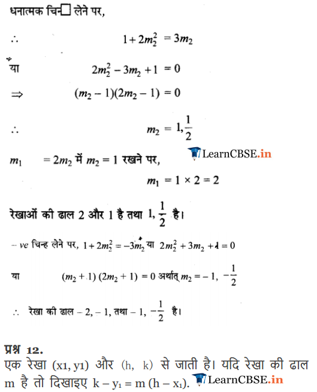

NCERT Solutions for Class 11 Maths Chapter 10 Exercise.10.2
Ex 10.2 Class 11 Maths Question-1
Ans.
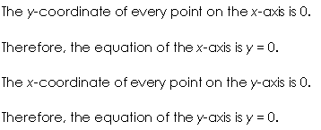
Ex 10.2 Class 11 Maths Question-2

Ans.
Ex 10.2 Class 11 Maths Question-3

Ans.
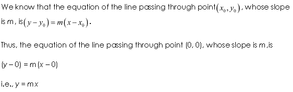
Ex 10.2 Class 11 Maths Question-4
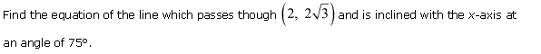
Ans.
Ex 10.2 Class 11 Maths Question-5
Ans.
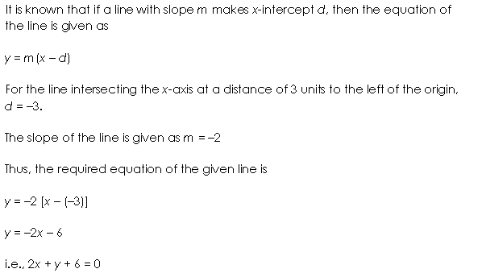
Ex 10.2 Class 11 Maths Question-6
Ans.

Ex 10.2 Class 11 Maths Question-7
Ans.
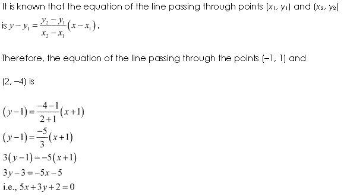
Ex 10.2 Class 11 Maths Question-8
Ans.
Ex 10.2 Class 11 Maths Question-9
Ans.
Ex 10.2 Class 11 Maths Question-10
Ans.
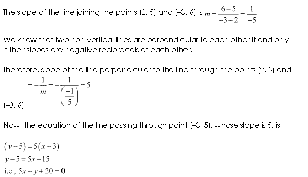
Ex 10.2 Class 11 Maths Question-11
Ans.
Ex 10.2 Class 11 Maths Question-12
Ans.
Ex 10.2 Class 11 Maths Question-13
Ans.
Ex 10.2 Class 11 Maths Question-14
Ans.
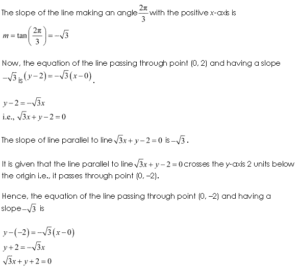
Ex 10.2 Class 11 Maths Question-15
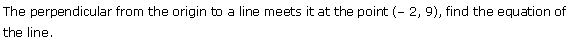
Ans.
Ex 10.2 Class 11 Maths Question-16
Ans.
Ex 10.2 Class 11 Maths Question-17
Ans.
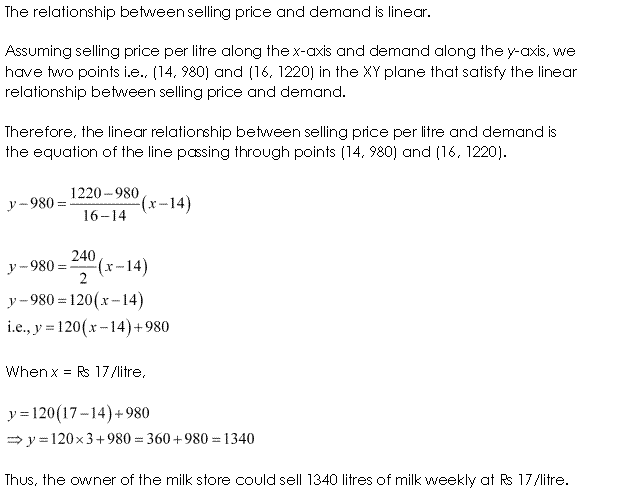
Ex 10.2 Class 11 Maths Question-18
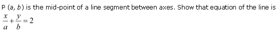
Ans.
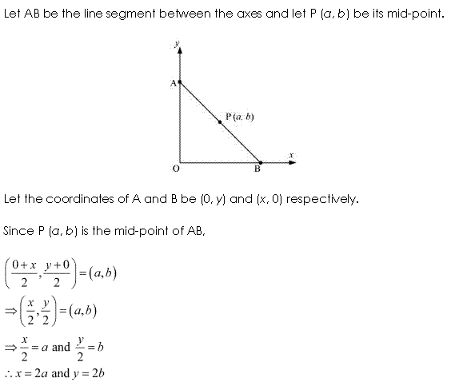
Ex 10.2 Class 11 Maths Question-19
Ans.

Ex 10.2 Class 11 Maths Question-20
Ans.
NCERT Solutions for Class 11 Maths Chapter 10 Exercise.10.3
Ex 10.3 Class 11 Maths Question-1

Ans.

Ex 10.3 Class 11 Maths Question-2
Ans.

Ex 10.3 Class 11 Maths Question-3
Ans.


Ex 10.3 Class 11 Maths Question-4

Ans.

Ex 10.3 Class 11 Maths Question-5

Ans.

Ex 10.3 Class 11 Maths Question-6

Ans.

Ex 10.3 Class 11 Maths Question-7
Ans.
Ex 10.3 Class 11 Maths Question-8

Ans.

Ex 10.3 Class 11 Maths Question-9

Ans.

Ex 10.3 Class 11 Maths Question-10
Ans.

Ex 10.3 Class 11 Maths Question-11

Ans.
Ex 10.3 Class 11 Maths Question-12

Ans.

Ex 10.3 Class 11 Maths Question-13
Ans.
Ex 10.3 Class 11 Maths Question-14
Ans.

Ex 10.3 Class 11 Maths Question-15
Ans.
Ex 10.3 Class 11 Maths Question-16
Ans.


Ex 10.3 Class 11 Maths Question-17
Ans.


Ex 10.3 Class 11 Maths Question-18

Ans.

NCERT Solutions for Class 11 Maths Chapter 10 Miscellaneous Solutions
Miscellaneous Exercise Class 11 Maths Question-1
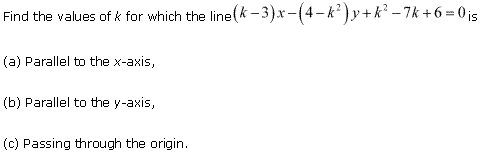
Ans.
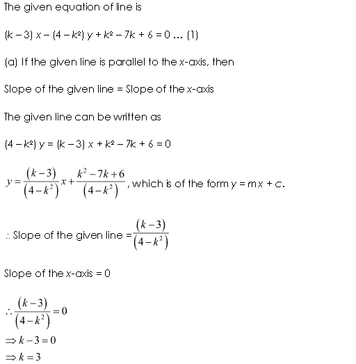
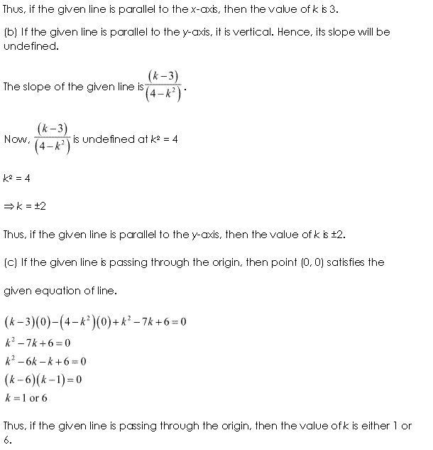
Miscellaneous Exercise Class 11 Maths Question-2

Ans.

Miscellaneous Exercise Class 11 Maths Question-3

Ans.
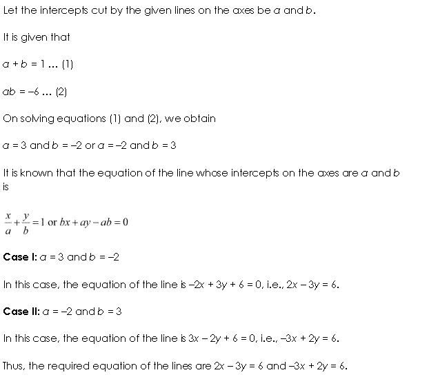
Miscellaneous Exercise Class 11 Maths Question-4

Ans.

Miscellaneous Exercise Class 11 Maths Question-5

Ans.

Miscellaneous Exercise Class 11 Maths Question-6
Ans.
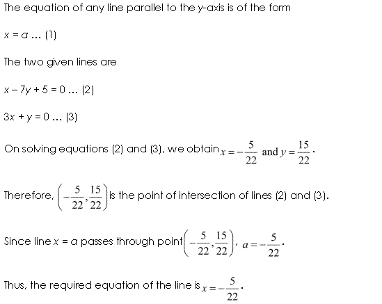
Miscellaneous Exercise Class 11 Maths Question-7

Ans.

Miscellaneous Exercise Class 11 Maths Question-8
Ans.

Miscellaneous Exercise Class 11 Maths Question-9

Ans.
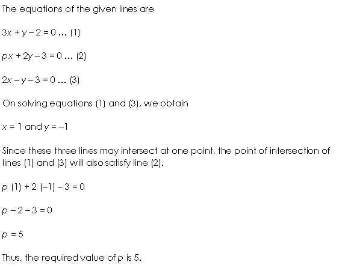
Miscellaneous Exercise Class 11 Maths Question-10
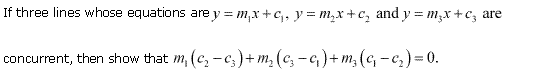
Ans.
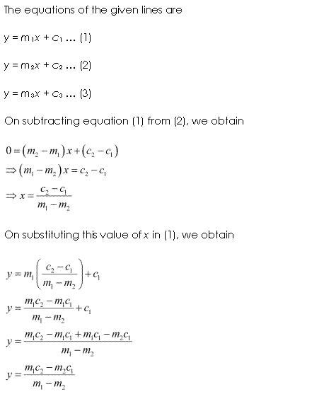

Miscellaneous Exercise Class 11 Maths Question-11

Ans.


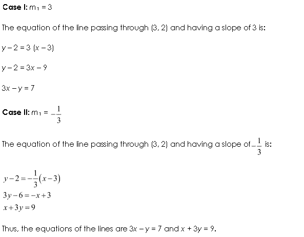
Miscellaneous Exercise Class 11 Maths Question-12

Ans.
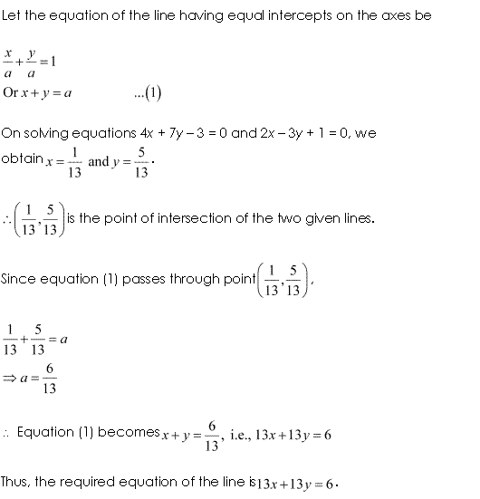
Miscellaneous Exercise Class 11 Maths Question-13
Ans.


Miscellaneous Exercise Class 11 Maths Question-14
Ans.

Miscellaneous Exercise Class 11 Maths Question-15

Ans.


Miscellaneous Exercise Class 11 Maths Question-16
Ans.

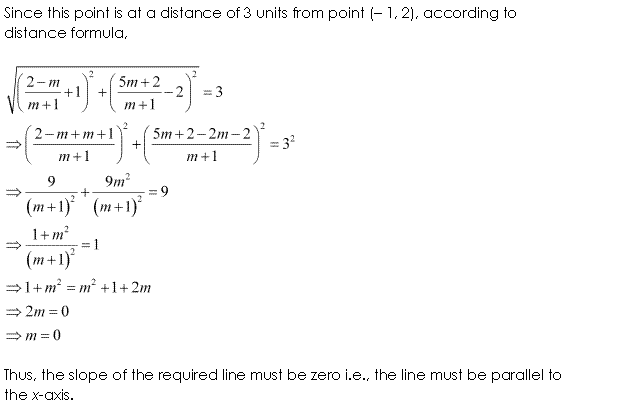
Miscellaneous Exercise Class 11 Maths Question-17

Ans.

Miscellaneous Exercise Class 11 Maths Question-18
Ans.

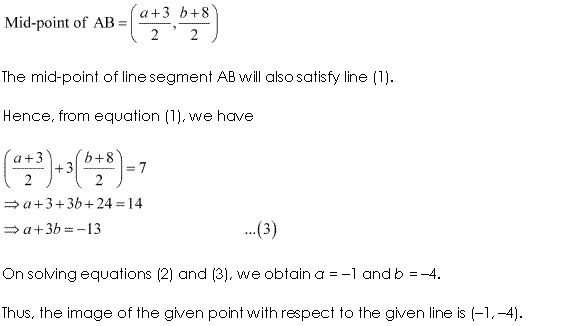
Miscellaneous Exercise Class 11 Maths Question-19

Ans.


Miscellaneous Exercise Class 11 Maths Question-20
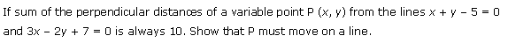
Ans.

Miscellaneous Exercise Class 11 Maths Question-21

Ans.


Miscellaneous Exercise Class 11 Maths Question-22
Ans.

Miscellaneous Exercise Class 11 Maths Question-23

Ans.
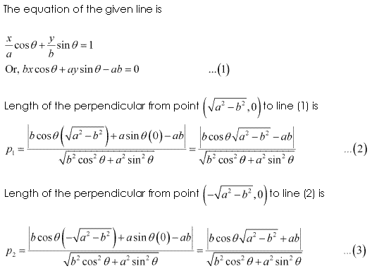
Miscellaneous Exercise Class 11 Maths Question-24
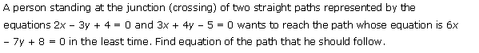
Ans.

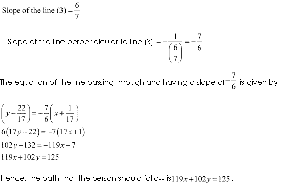
Maths NCERT Solutions Class 11 Maths Chapter 10 Exercise.10.1
Q-1. Construct a quadrilateral in the Cartesian plane with vertices (-2, 5), (0, 6), (4, -4) and (-3, -1). Also, find the area of the quadrilateral.
Q-2. Consider an equilateral triangle, each of whose sides are 2b which lies on the y- axis in such a manner that, the mid-point of each of its base is at the origin. Obtain all the vertices of the equilateral triangle.
Q-3. What is the distance between X (a1, b1) and Y (a2, b2) if:
(a) XY is parallel to x- axis
(b) XY is parallel to y- axis
Q-4. Consider two points (6, 5) and (4, 2). Get a point on the y- axis which is equivalent from the given two points.
Q-5. What is the slope of a line passing through the origin and, the mid- point of the line- segment joining the two points O (0, -5) and A (9, 0)?
Q-6. Prove that the points (5, 5), (4, 6) and (-2, -2) are the vertices of the right- angled triangle, without using Pythagoras theorem.
Q-7. What is the slope of the line which makes an angle 60∘ along the positive direction of the Y- axis which is measured in anticlockwise sequence.
Q-8. What will be the value of a so that the points (a, -2), (3, 2) and (5, 6) get collinear to each other?
Q-9. Prove that the points (-3, -2), (5, 0), (4, 4) and (-4, 2) are the vertices of a parallelogram without using the distance formula.
Q-10. Consider two points (4, -2) and (5, -3). What is the angle between the x- axis and the line joining the given two points?
Q-12. Consider a line passing through two points (a1, b1) and (j, k). Assume that the slope of the line passing through these points is m. Prove that:
k – b1 = m (j – a1).
Q-14. Take the records of the population and year graph given below. What will be the slope of the line XY? By using this, find the population in the year 2005.
NCERT Solutions for Class 11 Maths All Chapters
- Chapter 1 Sets
- Chapter 2 Relations and Functions
- Chapter 3 Trigonometric Functions
- Chapter 4 Principle of Mathematical Induction
- Chapter 5 Complex Numbers and Quadratic Equations
- Chapter 6 Linear Inequalities
- Chapter 7 Permutation and Combinations
- Chapter 8 Binomial Theorem
- Chapter 9 Sequences and Series
- Chapter 10 Straight Lines
- Chapter 11 Conic Sections
- Chapter 12 Introduction to Three Dimensional Geometry
- Chapter 13 Limits and Derivatives
- Chapter 14 Mathematical Reasoning
- Chapter 15 Statistics
- Chapter 16 Probability